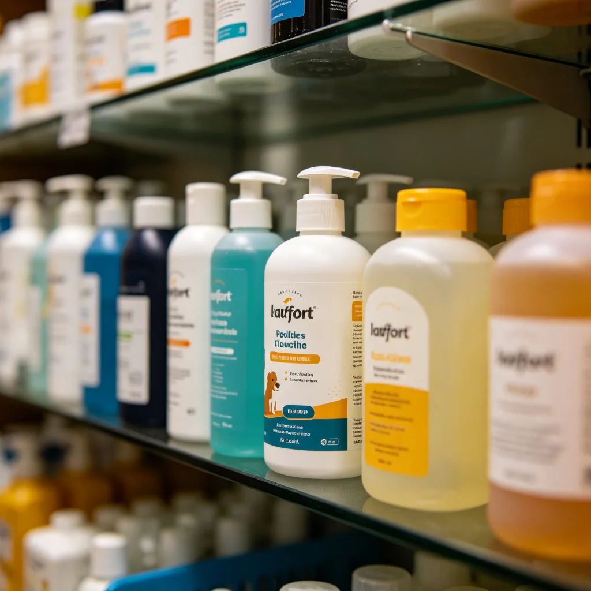
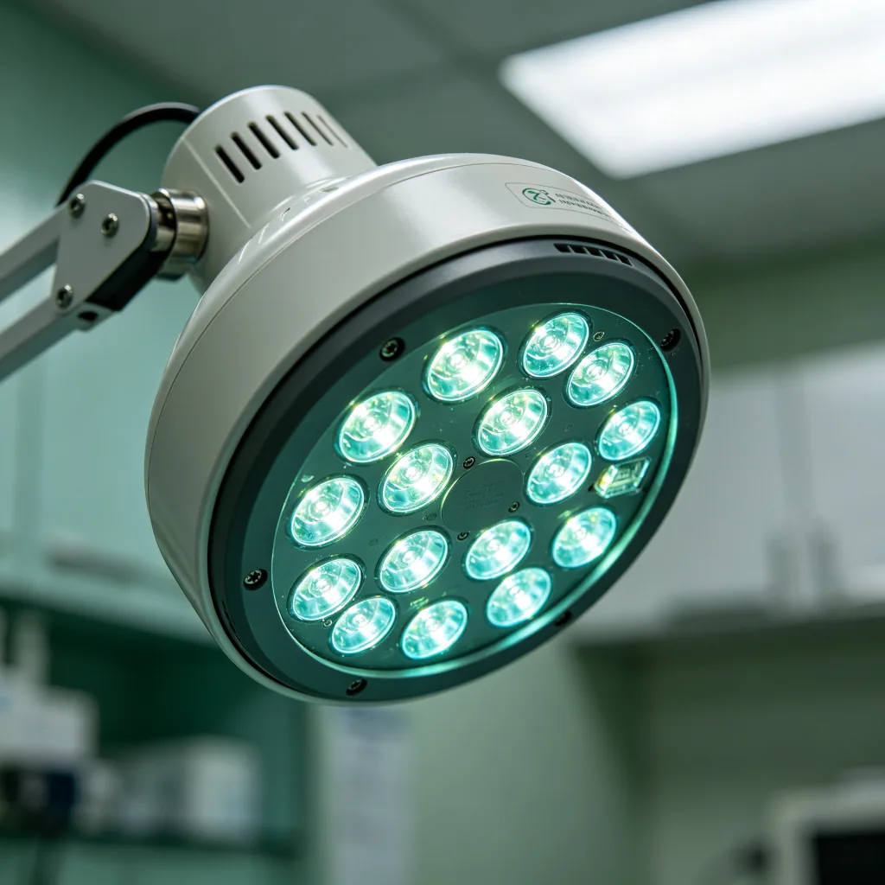

你剛拆完一個快遞，把空紙箱放在地上，轉身去拿剪刀。等你回來時，發現一隻美國短毛貓已經佔領了紙箱——牠坐在箱子裡，前爪搭在箱緣，表情嚴肅，彷彿這是牠的專屬辦公室，而你只是一個打擾牠工作的不速之客。這個場景，幾乎每個貓奴都經歷過。為什麼貓咪這麼愛紙箱？
紙箱的魔力
貓咪對紙箱的熱愛不是沒有原因的。科學研究和動物行為學家的觀察表明，紙箱對貓咪有著多種吸引力：
安全感：這是最主要的原因。貓咪的祖先是獨居的狩獵者，同時也是其他大型動物的獵物。在野外，貓咪需要一個安全、隱蔽的地方來休息和躲避天敵。一個紙箱，四面有牆、上面有頂，只有一個開口，對貓咪來說就像是一個完美的洞穴——在這裡，貓咪可以感到安全和放鬆。荷蘭烏得勒支大學的一項研究發現，在新環境中，有紙箱可以躲的貓咪比沒有紙箱的貓咪壓力水平明顯更低，適應環境的速度也更快。

溫暖：紙板是一種很好的隔熱材料，可以保留熱量。貓咪的舒適溫度區間大約是30-38°C，比人類高很多，因此貓咪總是在尋找溫暖的地方。一個紙箱可以困住貓咪的體溫，讓內部溫度比室溫高好幾度，對貓咪來說就像是一個天然的暖窩。這也是為什麼貓咪喜歡把自己蜷縮在紙箱裡——這樣可以進一步減少熱量散失。
狩獵和玩耍：紙箱也是貓咪的「狩獵場」和「遊樂場」。貓咪可以躲在紙箱裡，突擊路過的玩具或人類的腳；可以用爪子抓撓紙箱的邊緣，滿足抓撓的需求；可以把紙箱咬出各種形狀，當成「改造項目」。對貓咪來說，一個紙箱就是一個無限可能的玩具——今天是城堡，明天是飛船，後天是實驗室。
氣味：紙板有著獨特的氣味，而且可以吸收和保留氣味。當貓咪在紙箱裡待一段時間後，紙箱就會充滿貓咪的氣味，這會讓貓咪感到更加安心和熟悉。貓咪的嗅覺非常靈敏，氣味對牠們的安全感有著重要的影響。
如何為貓咪選擇合適的紙箱
雖然任何紙箱都可能讓貓咪開心，但選擇合適的紙箱可以讓貓咪更加舒適和安全：
- 大小合適：紙箱應該足夠大，讓貓咪可以自由進出、轉身和舒展身體，但也不要太大——貓咪喜歡有「被包裹」的感覺，太大的空間會讓貓咪缺乏安全感。一般來說，紙箱的內部尺寸比貓咪的身體大20-30%是比較合適的。
- 移除危險物品：在把紙箱給貓咪之前，要移除膠帶、訂書針、塑膠把手等可能對貓咪造成傷害的東西。如果紙箱上有印刷油墨，要確認油墨是無毒的（大多數食品包裝箱的油墨是安全的）。
- 提供多個紙箱：如果家裡有多隻貓咪，要提供足夠多的紙箱，避免貓咪之間因為爭奪紙箱而打架。即使只有一隻貓咪，也可以在不同房間放置多個紙箱，讓貓咪有更多的選擇。
- 定期更換：紙箱用久了會變髒、變形、甚至滋生細菌。建議每隔幾週更換一次新的紙箱，保持清潔和新鮮感。
貓咪的「如果我適合，我就坐」定律
網路上有一個著名的「貓咪定律」：「如果我適合，我就坐」（If I fits, I sits）。這個定律源於網路上大量的貓咪坐在各種奇怪地方的照片——紙箱、碗、鍋子、鞋子、盒子、甚至是杯子。雖然這個定律看起來很荒謬，但它確實反映了貓咪的一個真實行為特徵：貓咪喜歡坐在狹小、有邊界的空間裡，因為這樣的空間可以給牠們帶來安全感。所以，下次當你看到你的貓咪坐在一個看起來完全不合適的地方時，不要驚訝——對貓咪來說，只要「適合」，那就「坐」。

紙箱辦公室的美短，用牠的嚴肅和可愛，告訴我們快樂其實可以很簡單——一個廢棄的紙箱，就可以讓一隻貓咪開心半天。在這個物質豐富的時代，我們或許可以從貓咪身上學到一點：真正的快樂不是來自昂貴的玩具或奢華的享受，而是來自一個溫暖、安全、屬於自己的小空間。